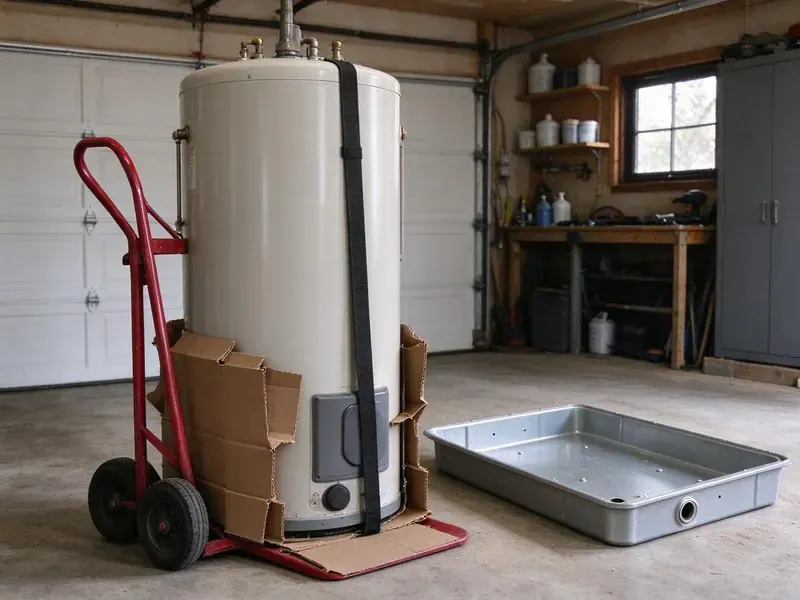

Sewage Ejector Pump Installation in Claymont, DE
Laundry in the basement? We add gray water pumps in Claymont, DE that lift to the main drain.
- Fast Pump Replacements
- Labor Warranty
- Grinder Pumps
- High Water Alarms

Schedule an Ejector Pump Visit in Claymont, DE
Permit, basin, vent and alarm are all on us.
Basement Plumbing That Pumps Right in Claymont, DE
GNV Plumbing installs ejector systems across Delaware for homes and businesses with plumbing below the sewer. The pump lifts waste up to the building drain, which then flows by gravity to the public sewer or to a septic tank. The pump has to match the job. Too small and it struggles, and too large and it short-cycles until the motor burns out early.
Our expertise includes:
- Grinder pump systems for long or uphill runs
- Basin sizing and venting for new systems
- Sealed basins with gas-tight lids and a separate vent

Additional Plumbing Installation Services in Claymont, DE
We install water heaters, pumps, lines, and fixtures across Claymont, DE with precision workmanship that meets every local code.


Customers
Why Choose GNV Plumbing for Sewage Ejector Pump Installation in Claymont, DE?
Every pump gets sized for the job rather than picked off a shelf. Sized right, the pump starts less often, the switch and motor wear slower, and it can run its full 7 to 10 years without failing on a holiday. Short cycling kills pumps.
- System Sizing, Lift and pipe run decide the pump, not a rule of thumb.
- Code Compliance, Gas-tight lid, vent and check valve on each install.
- Clean Worksite, Floors covered, dust contained, and we patch the concrete.
Citywide Coverage
Service calls across Claymont get the same crew and the same process. Small half bath or full suite, each one gets lift measured, vent checked, a written price and a multi-cycle water test. Size changes the pump, not the steps.
Experienced Team
Our team reads the pump curve, not a rule of thumb. Lift, run length, fittings and discharge size all change a pump's output, and a pump chosen without that math tends to short-cycle or strain. Math beats guessing.
Safety-First Approach
Safety and code compliance start with the vent on every ejector install we do in Claymont. Because sewage basins produce methane and hydrogen sulfide, we gasket every penetration, vent the basin to the roof and tie the vent in where code permits. Sewer gas stays out.
Trusted Certified Claymont Plumbing Services Professionals
At GNV Plumbing, we take pride in licensed, certified plumbing services throughout Claymont, DE. Those papers on the wall mean something. Our plumbers hold recognized industry credentials, and they follow strict safety and quality rules on every repair, installation and maintenance call we run.
Call Us Now PHCC Plumbing Contractor Recognition
PHCC Plumbing Contractor Recognition Better Business Bureau (BBB) Accreditation
Better Business Bureau (BBB) Accreditation Angi Certified Pro
Angi Certified Pro ISO 9001 Quality Management Certification
ISO 9001 Quality Management CertificationSewage Ejector Pump Installation in Claymont, DE
Residential Sewage Ejector Pump Installation in Claymont
Residential ejector systems in Claymont serve basement bathrooms, lower-level suites and any fixture that sits too low to drain by gravity to the sewer. The setup is a sealed basin, a pump, a float switch, a check valve and a vent. The parts are simple. Most problems come from the install, not the hardware, so we take our time on the vent and the lid seal.

Basement Bathroom Ejector Systems in Claymont
Basement bathrooms sit below the building sewer, so every fixture drains to a sealed pit instead of flowing by gravity. We saw the floor, trench drains to the basin, set it, carry a two-inch vent to the roof and run discharge to the main drain through a check valve and shutoff. The slab gets repoured.
Liberty Pumps Sewage Ejector Pump Installation in Claymont, DE
Liberty builds single and dual pump packages that arrive with the basin, pump, lid and fittings matched. Matched packages speed up the install, and Liberty's float design is less likely to snag on the basin wall, a common reason older pumps fail to start. Switch failures cause many calls.
Commercial Sewage Ejector Pump Installation in Claymont, DE
Businesses in Claymont, DE with restrooms, kitchens or break rooms below grade need ejector systems that keep up with heavier, steadier use than a house. Commercial setups often run duplex pumps with an alternating panel, so one pump can fail and the other keeps the restrooms open. Closed restrooms cost business. We size both pumps to carry the full load.
Emergency Ejector Pump Replacement in Claymont, DE
A dead ejector pump takes every below-grade fixture out of service until it is fixed. Quit using the basement fixtures and the washer if it feeds the pit, then call (302) 406-6354 and we aim to have a plumber and pump at your door the same day. Replacements are often quick.
Upflush and Macerating Toilet Systems in Claymont
Macerating systems like Saniflo add a bath fixture or two without breaking the concrete floor. It sits behind the toilet, grinds waste and pumps it through a small line, often three-quarter or one inch, to a drain above, which suits a small half bath. Venting still applies.
Duplex and Commercial Ejector Systems in Claymont, DE
Commercial buildings, multi-unit properties and busy homes often need duplex systems with an alternating control panel. Alternating the lead pump spreads wear, and when one fails or flow spikes, the second starts on its own and the panel sounds an alarm. Redundancy matters here.

Sewage Ejector Pump Basin Installation in Claymont, DE
The basin holds everything, and a 30-gallon size is common for a single basement bathroom. A larger basin means longer, less frequent cycles that spare the motor and switch, so we go bigger when the pit takes a laundry or several fixtures. Every lid gets sealed.
Local Sewage Ejector Pump Installation in Claymont, DE
Our crews install ejector systems in Claymont most weeks of the year, so we have seen most local basement layouts. Walkouts on slopes, full basements with a high sewer exit and older homes with an unpumped basement toilet all need different plans, and knowing that up front keeps jobs on time. Fewer surprises mid-job.
Our plumbers know the permit routine in Claymont, DE, which keeps new ejector systems on schedule. New basins need a rough-in inspection with the vent and drains exposed, so we time the concrete patch around the inspector's visit rather than pouring early and cutting it back open. It saves a day.
GNV Plumbing at a Glance
- Fully licensed plumbing team covering Claymont, DE
- Same-day appointments and 24/7 emergency response
- Clear written estimates, no hidden fees
- 4.8-star rated by 849+ Delaware customers
Claymont Map
Claymont Information
- Population
- 9,895
- Area codes
- Local
- Service area
- Claymont and towns within a 40 mile drive
- Nearby
- Edgemoor, Wilmington, Elsmere, Wilmington Manor
An ejector pump usually runs 7 to 10 years, and a high water alarm is the cheapest way to hear about a failure before it backs up.
Talk to a Plumber
Reach out to GNV Plumbing for reliable plumbing work done by licensed pros in Claymont, DE.
Our Specialized Plumbing Services in Claymont, DE
At GNV Plumbing, we handle the full list of plumbing services across Claymont, DE. We go from leak detection all the way to full system installations, for homes and commercial buildings, and we do it quickly at a fair price. Explore our core services below:


From Basin to Alarm Test, Ejector Work in Claymont, DE
You get a written price first, then the work starts in Claymont, DE.
Request a Quote
Call (302) 406-6354 or use the form to set up a visit. We will ask a few questions first.
Assessment
In your Claymont home, we measure lift and run and check the vent route. We also find the best basin spot.
Installation
We cut the floor if needed, set the basin and install the pump. Each joint gets sealed and checked.
Frequently Asked Questions About Sewage Ejector Pump Installation in Claymont
Replacing a pump in an existing basin usually costs $900 to $2,000. A new system with basin, venting and floor work usually starts higher.
Strange noises from the pit, short, frequent cycles, slow basement drains and odors. Repeated alarms within a few months usually mean the pump is nearly done.
Constant running, a pump that never starts, grinding or humming, alarms that keep tripping and sewage odor near the basin. Once a pump passes 7 to 10 years and shows those signs, replacing it beats cleaning up a backup. Check the install date.
Seven to 15 years, depending on the pump and how it is used. Frequent cycling, wipes, grease and a basin that is too small for the load all shorten pump life, while a properly sized system with an annual check can reach the top of that range. Care adds years.
You get a written labor warranty from GNV Plumbing, and the pump is covered by its maker. The estimate lists the exact terms.
We advise against it. The job involves plumbing, electrical, venting and often concrete work, and a mistake on any of them can mean sewer gas in the house, a backup or a failed inspection that has to be torn out and redone. Permits usually require a pro.
Once a year is a good habit. We check the float, test the alarm, look at the check valve and pull anything that should not be in the basin, like wipes or grease. Busy systems may need more.
A well-kept pump usually lasts 7 to 10 years, and better units can go longer. Run frequency and what gets flushed decide most of it.
What Our Customers Say About Our Plumbing Experts

Paul B.
Our pit pump ran nonstop even in dry weather. The plumber found the check valve was stuck open, so the same water kept cycling back into the pit. New valve, new float switch, done in an hour. It runs quiet now.
Sump Pump · Wilmington Manor, DE
Marcus H.
Grease from the fryer line kept clogging the kitchen drain at my diner. GNV Plumbing hydro jetted the line after closing, showed me the buildup on camera, and set us up on a quarterly cleaning so it does not catch us on a Friday again.
Drain Cleaning · New Castle, DE
Diane F.
My kitchen faucet had dripped for months and I finally got tired of hearing it at night. GNV Plumbing came out the next morning, replaced the cartridge and the O rings, and tightened a loose base that was letting water under the sink.
Faucet Repair · Edgemoor, DE
Nathan E.
Our tankless heater kept throwing an error code and shutting off mid shower. The tech flushed the heat exchanger, which was full of scale, and replaced a bad flow sensor. Hot water has been steady for half a year now.
Water Heater Repair · Edgemoor, DECarlos V.
Our house still had galvanized pipe, and upstairs the shower was a trickle. The crew repiped everything in PEX over three days and patched every drywall hole before they left. The pressure difference is night and day.
Repiping · Elsmere, DEKaren W.
After our third pinhole leak in copper, we stopped patching. GNV Plumbing gave us a written plan room by room and repiped the house in PEX while we stayed in it. The crew covered our floors every morning and cleaned up every night.
Repiping · Claymont, DE